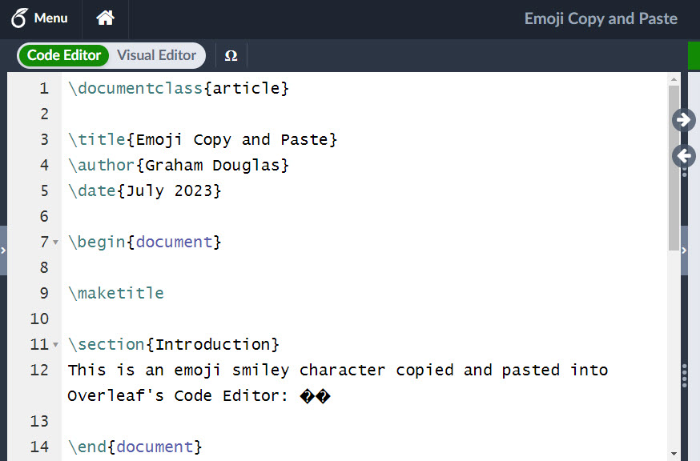
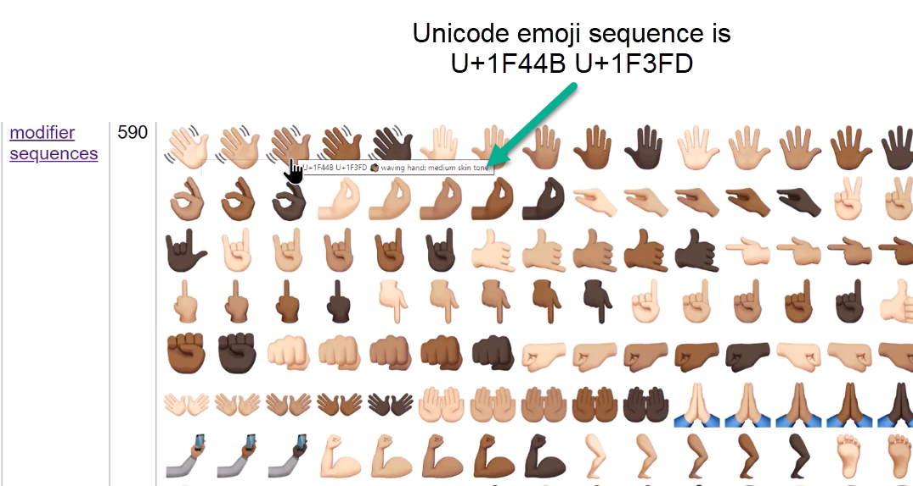
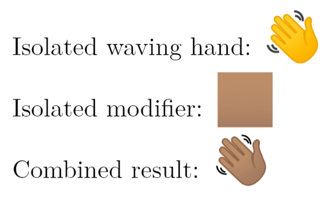
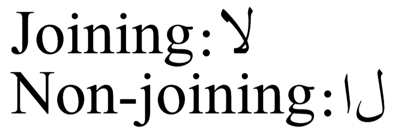
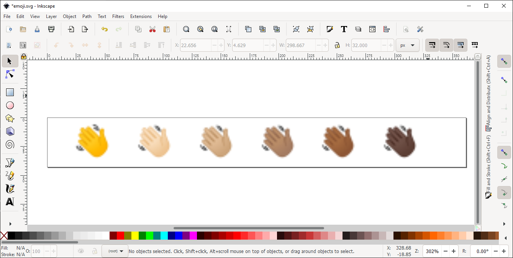
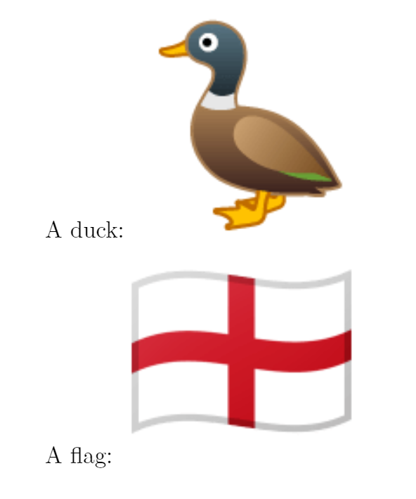
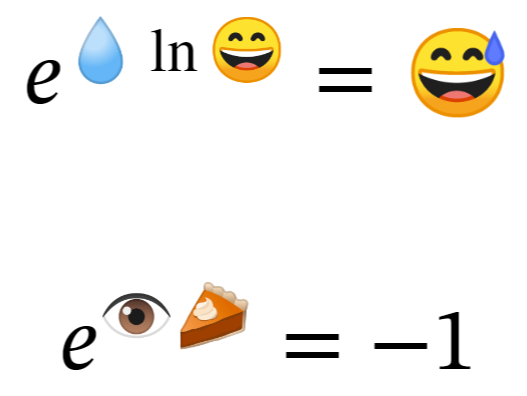

An overview of technologies supporting the use of colour emoji fonts in LaTeX
Introduction
This article provides an overview of various background topics related to using OpenType color fonts for typesetting color emoji in LaTeX. We’ve tried to provide a wide range of materials, catering to a broad spectrum of interests and expertise. To keep the article manageable, our coverage of certain topics omits a lot of technical detail but we hope there’s sufficient material to orientate your exploration of typesetting color emoji in LaTeX.
Update (July 2023): This article was first published in August 2021 and revised in July 2023 to update the section on Using SVG-based OpenType color fonts with LuaHBTeX.
Which topics do we cover?
This article covers the following general topics:
- Unicode: the standard which encodes emoji as characters and codifies their expected behavior in text-processing and typesetting applications.
- OpenType color fonts: specialized fonts that provide colorful representations of emoji characters displayed in your LaTeX document.
- Text shaping: introducing a key component of typesetting complex-script languages and emoji.
- HarfBuzz: the component of LuaHBTeX which enables advanced multilingual typesetting and the use of OpenType color fonts to typeset emoji in LaTeX.
- Different TeX engines: exploring their support for OpenType color fonts and selecting which TeX engine to use.
- LuaHBTeX’s HarfBuzz API: an introduction to the “magic” behind text shaping in LuaHBTeX.
Three ways to typeset color emoji
Color emoji can be typeset with LaTeX using three main methods:
- Using standard LaTeX graphics tools such as TikZ, MetaPost, or Asymptote to draw the emoji.
- Inserting emoji using pre-prepared emoji graphics stored in external files.
- Treating emoji as Unicode-encoded text and using text shaping with OpenType color fonts to typeset them.
The practical options for including color emoji in your LaTeX document depend on the TeX engine being used to compile that document: i.e., whether you are using:
- pdfLaTeX: pdfTeX engine + LaTeX;
- XeLaTeX: XeTeX engine + LaTeX;
- LuaLaTeX: LuaHBTeX engine (starting with TeX Live 2020) + LaTeX.
All three of these TeX engines can use LaTeX tools or packages to draw emoji or use \includegraphics{...} to insert emoji stored in external graphics files. Drawing or importing graphics are ideal techniques to typeset emoji when you need a solution that doesn’t depend on the TeX engine used to compile the LaTeX document.
However, if your workflow provides the flexibility to choose a particular TeX engine, and you would prefer to use OpenType color fonts and Unicode-based text processing, the newest version of LuaTeX, called LuaHBTeX, is what you need. Starting with TeX Live 2020, LuaHBTeX is used to compile LaTeX documents based on the LuaLaTeX format.
Background on Unicode and emoji characters
Character encodings
Computers store, transmit, and process text using a sequence of numeric (integer) values that represent the text’s constituent characters. Reliable text processing needs producers and consumers of text to agree on which integer values should be used to represent individual characters within the text stream. In other words, what is that text’s character encoding? An encoding is the set of agreed integer values assigned to represent a certain set of characters: each character is represented by an integer value within the encoding being used.
Enter Unicode
Historically, in the era of 8-bit text, many different character encodings were used, always raising the specter of encoding mismatches: producers and consumers of text mistakenly assuming different encodings, resulting in text-processing errors. Anyone who has worked with TeX/LaTeX for some years is likely to have encountered encoding mismatches between the input text and the fonts used to typeset a document. If the document fonts are configured to use an encoding different from that of the text, it likely results in missing or erroneous characters in the typeset PDF.
These historic encoding problems can be resolved using an international standard that encodes all the world’s characters: Unicode. The Unicode standard is not static but is periodically updated to include additional characters and scripts (writing systems) within its encoding scheme. There’s a formal review process for proposing new characters with a specific scheme for new emoji characters.
How many Unicode characters?
Unicode encodes a theoretical maximum of 1,114,112 characters. Each of the 1,114,112 integer values is called a code point: the integer value assigned to identify each character. However, for various technical reasons only 1,112,064 code points can be assigned to actual characters: 2048 code points are non-assignable and forbidden for use within Unicode-compliant text.
At the time of writing (the first version of this article), Version 13 of the Unicode standard had allocated a total of 143,859 code points to actual characters, including 3304 characters now encoded as emoji (see page 2 of that document). The growth in number of characters encoded by Unicode is nicely documented in the article How many Unicode characters are there? and in a Wikipedia entry.
Unicode planes
The entire collection of 1,114,112 Unicode code points is grouped into 17 so-called Planes: Plane 0 to Plane 16, each one containing 65536 code-point values, yielding a total of \(17\times2^{16} = 1,114,112\) characters. Plane 0, called the Basic Multilingual Plane, encodes the most commonly used characters. Planes 1–16 are called Supplementary Planes.
The rise of emoji
New characters arise through changing modes of human communications, and mobile phone technology gave rise to one such set of characters: emoji, which evolved in Japan during the late 1990s. It’s not surprising that the Unicode FAQ on Emoji notes
“The word emoji comes from the Japanese 絵 (e ≅ picture) + 文字 (moji ≅ written character).”
Readers interested in the background and historical development of emoji may find interest in this Unicode introduction or the article I second that emoji: The standards, structures, and social production of emoji.
It wasn’t until 2010, with the release of version 6.0 of the Unicode Standard, that many emoji were formally recognized as characters in their own right. Unicode 13.0 encoded 3304 characters as emoji (see page 2 of that document), with Unicode 13.1 listing lists 3521 emoji.
Emoji live on a higher plane
Unicode assigned many emoji characters to code points outside the Basic Multilingual Plane (BMP), encoded in Plane 1 with code points in the range 1F000–1FFFF—which has an important consequence for anyone wishing to copy and paste emoji characters into the Overleaf editors (Code Editor or Visual Editor). Overleaf’s text editors can only handle characters within the Basic Multilingual Plane, although we hope future upgrades will introduce support for non-BMP characters. Note that this limitation affects only non-BMP characters within text pasted into files destined to be edited via the Overleaf editors. There are other ways to access emoji characters:
- Using the primitive commands
\char"<code point>or\Uchar"<code point>(see this section of the article). - Using input text files containing emoji characters in UTF-8 format.
- Using LaTeX commands (macros) which insert emoji characters.
Pasting emoji and other non-BMP characters into Overleaf
If you paste an emoji character, for example, 😀, into the Overleaf Code Editor, it will, at present, be converted to the characters ��.

The � character has Unicode code point FFFD and its official name is the REPLACEMENT CHARACTER and is used to “replace an unknown, unrecognized or unrepresentable character”.
Using Unicode code points (U+<hexadecimal value>) in LuaLaTeX
The Unicode documentation represents code point values using the notation U+<hexadecimal value>—such as U+1F600, where 1F600 is the <hexadecimal value> of the Unicode code point for the 😀 emoji character. To use these code point values in LuaLaTeX, you delete the U+ and write \char"<hexadecimal value> or \Uchar"<hexadecimal value>. The " character tells a TeX engine that the number provided is specified in hexadecimal. For example, to use the 😀 emoji, you would write \char"1F600 or \Uchar"1F600—using a font capable of typesetting it.
A minimal LuaLaTeX example using \char and \Uchar to typeset the 😀 emoji character might be:
\documentclass{article}
\usepackage{fontspec}
\begin{document}
\newfontfamily\emojifont[Renderer=Harfbuzz]{NotoColorEmoji.ttf}
%Use \emojifont in a group to keep its effects local
{\emojifont
\Uchar"1F600
\char"1F600}
\end{document}
Open this LuaLaTeX example in Overleaf
(optional detail) LuaTeX/LuaHBTeX: \char vs \Uchar
In addition to the conventional \char<character code> command for typesetting a specific <character code>, using the current font, the LuaTeX, LuaHBTeX and XeTeX engines also provide the \Uchar<character code> command. From a user’s perspective, the result of \char and \Uchar look the same, but there is a subtle difference in how these commands work, as we note below.
The key difference: expansion
\Uchar is a so-called expandable command whereas \char is not expandable. When a \char<character code> or \Uchar<character code> command is being “executed”—i.e., the command is not being stored as part of a macro or other token list—the following actions take place inside the TeX engine:
\char<character code>instructs the TeX engine to immediately insert a character token, representing<character code>, into whatever piece of content it is currently typesetting.- In contrast,
\Uchar<character code>has two distinct processing steps: - The
\Uchar<character code>command is expanded, and the<character code>is converted to a temporary token list containing a single character token which represents the<character code>. - That single-character token list is now made available to the TeX engine as the source of its next input. In effect, the TeX engine “temporarily shifts its gaze” to use that single-token list as the location of its next input item (token). By default, the TeX engine simply goes back to read (input) that token and typeset the corresponding character, reproducing the behavior of the
\charcommand. However, because that<character code>was not immediately typeset, but temporarily stored (saved) as a single token, primitive TeX commands or LaTeX macros can make use of (absorb) that token—it does not have to be typeset straight away but can be used in further processing as required.
In effect, \char<character code> says “typeset this <character code> now,” whereas \Uchar<character code> has a form of “delayed action” by creating a stored character token and making it available as the next input item (a token). That token can either be used (absorbed) by TeX commands and macros or re-read by the TeX engine and typeset.
Unicode (encoding) is not the full story
The ability to use emoji characters within Unicode-encoded text is only part of the emoji success story. The surge in emoji usage was also enabled by developments in OpenType font technology—fonts whose glyph data (character designs) can contain color data: so-called OpenType color fonts.
Apart from suitable fonts, the use of color emoji requires additional software components whose tasks include:
- pre-processing (“shaping”) Unicode-encoded text, preparing it for display using a particular font;
- rendering and display of a font’s colorful emoji glyphs onto a device’s screen.
Glyph vs. character: aren’t they the same thing?
The terms “glyph” and “character” are often used as if they were interchangeable—referring to the same basic concept—but there is a subtle, although important, difference in their meaning.
Unicode defines the term “character” as:
“The smallest component of written language that has semantic value; refers to the abstract meaning and/or shape, rather than a specific shape… ”
In contrast, a “glyph” is a specific shape (design) for the visual representation of a particular character.
The character vs. glyph issue is readily observed when emoji-laden text is viewed on various software systems/platforms, such as reading the same text on your iOS- or Android-based mobile phone or Windows desktop computer. Whichever device or platform is used, the underlying text (sequence of characters) would contain the same Unicode-encoded emoji characters. It is device-specific capabilities involved in pre-processing that text then rendering and display of the results, perhaps using device-specific fonts, which produces different glyphs (character designs) to represent the same emoji characters.
Unicode’s Full Emoji List provides sample images representing each Unicode emoji character—demonstrating various glyphs used by different technology vendors. Not only do font designers adopt their own particular designs (glyphs) to represent emoji characters, but individual fonts also vary in the number of emoji characters they support (contain glyphs for) and may or may not contain more advanced features of emoji-text processing included in the Unicode emoji specifications.
The notion and concept of characters, their semantics and encoding, form the basis for the world of Unicode: it deals with characters. The design and visual representation of individual characters, as glyphs, belong to font technologies and the craft of font design.
Unicode emoji: much more than text encoding
Unicode’s core role is to provide a global encoding standard that defines which integer value, called a code point, should be used to represent each character, including emoji, within a stream of Unicode-encoded text.
Unicode’s specification for emoji also defines processing behaviors for certain sequences of emoji characters appearing within a stream of Unicode-encoded text. Defined sequences of emoji characters can be “merged” through a process called text shaping to produce a single resultant (“composite”) emoji glyph—that single glyph would be used by the device's operating system to represent the original character sequence present in the text.
Unicode’s Technical Report on Unicode Emoji documents the rich set of features available to software wishing to provide Unicode-compliant processing of emoji characters. As an example, Unicode defines (encodes) characters called emoji modifiers that can be used to generate variations of “base” emoji characters, such as variations in skin tone based on the Fitzpatrick scale. Note that the set of base emoji characters and the applicable modifiers are defined as part of the overall Unicode emoji standard.
The Unicode page Emoji Sequences provides a chart of the sequences currently provided by the Unicode specification. Place a mouse pointer over any of the emoji glyph images to see a small pop-up tooltip telling you the underlying Unicode emoji character sequence which produces that glyph:

For example, the emoji glyph:
is listed in the modifier sequences section and is produced by the two-character sequence U+1F44B U+1F3FD. Those component characters are:
U+1F44B: (WAVING HAND)
U+1F3FD: (EMOJI MODIFIER FITZPATRICK TYPE-4)
Using skin tone modifiers in LuaHBTeX
The following example uses LuaHBTeX to demonstrate the use of emoji modifiers:
\documentclass{article}
\usepackage{fontspec}
\begin{document}
\newfontfamily\emojifont[Renderer=HarfBuzz,SizeFeatures={Size=20}]{NotoColorEmoji.ttf}
Isolated waving hand: {\emojifont\Uchar"1F44B}\par
Isolated modifier: {\emojifont\Uchar"1F3FD}\par
Combined result: {\emojifont\Uchar"1F44B\Uchar"1F3FD}
\end{document}
Open this LuaLaTeX emoji modifiers example in Overleaf
This example produces the following output:

UTF-8: its role in storing Unicode text
Any text or code you type or paste into Overleaf’s Code Editor (or Visual editor) will be stored in UTF-8 format, so we’ll briefly review what UTF-8 actually means. UTF stands for Unicode Transformation Format, and UTF-8’s role in storing or transmitting Unicode-encoded text is indicated by the phrase “Transformation Format.”
Unicode’s code-point values range from 0 to a maximum of 1,114,111, so it’s impossible to represent all Unicode character values using a single 8-bit byte, which can only store up to 256 different values: 0 to 255. However, it is possible to represent any Unicode code point integer using a consecutive sequence of byte-sized values—which is the principle behind UTF-8.
UFT-8 provides a “recipe” to transform (i.e., to “encode” or “convert”) a Unicode integer code point value into a unique sequence of 1 to 4 consecutive byte-sized integers: the number of consecutive bytes required depends on the value of the code point integer. Consequently, you may read of UTF-8 storing Unicode characters as multibyte sequences because a single Unicode character (code point integer) is represented in UTF-8 as a sequence of 1 to 4 consecutive bytes.
Naturally, text stored in UTF-8 can be converted back to its original sequence of integer Unicode code point values—that’s what XeTeX or LuaTeX/LuaHBTeX have to do when reading a LaTeX input file stored in UTF-8 format. Those TeX engines need to know the input Unicode code point (character) values before they can to typeset the text. Note that pdfTeX does not have a built-in UTF-8 decoding capability so it has to rely on TeX macros to process (decode) input text formatted in UTF-8.
Some UTF-8 examples
- The Arabic character ش (“sheen”) has Unicode code point 0634 in hexadecimal (base 16) or 1588 in decimal (base 10). In UTF-8 ش is represented as 2 (hexadecimal) values D8 and B4, so the character ش would be stored as the two consecutive bytes D8B4 within UTF-8 encoded text.
- The emoji character 😀 has Unicode code point 1F600 in hexadecimal (base 16) or 128512 in decimal (base 10). In UTF-8 😀 is represented as 4 (hexadecimal) values F0, 9F, 98 and 80, so the character 😀 would be stored as the 4 consecutive bytes F09F9880 within a UTF-8 text file.
Special characters used in Unicode-base emoji text processing
Not every character encoded within Unicode is intended for visual presentation via the glyphs within a font: some encoded characters are designated as non-printing characters whose purpose is to assist specialized text-processing functions (within supporting software). Different software applications provide varying levels of support for the non-printing characters encoded into Unicode, so the outcome will depend on the software environment—applications and fonts—being used.
Two non-printing characters to know about
- Zero width joiner (ZWJ), code point 200D (hexadecimal), is, as its name suggests, designed to trigger the “joining behavior” of input characters—but only if those input characters possess a defined joining behavior.
- Zero width non-joiner (ZWNJ), code point 200C (hexadecimal), is designed to prevent the “joining behavior” that input characters might otherwise exhibit. For example, you can use the ZWNJ to prevent the joining behavior of consecutive Arabic characters that would normally be processed (shaped) into their joining forms.
Unicode has published a list of Recommended Emoji ZWJ Sequences which use a U+200D ZERO WIDTH JOINER (ZWJ) to combine emoji character sequences into a single composite emoji glyph—if it is available within the font(s) being used.
Example use of zero width non-joiner
The following minimal code fragment uses the Scheherazade OpenType font, included in TeX Live, to define a LaTeX font called \arabicfont that we can use to typeset some Arabic. The line
{\arabicfont Non-joining:\textdir TRT\Uchar"0644\Uchar"200C\Uchar"0627}
uses a zero width non-joiner character, via \Uchar"200C, to prevent the normal joining behavior of the two Arabic letters ل (lam) and ا (alef). Note the use of \textdir TRT to set the text direction as right-to-left:
\documentclass{article}
\usepackage{fontspec}
\begin{document}
\newfontfamily\arabicfont[Script=Arabic,Renderer=Harfbuzz,SizeFeatures={Size=40}]{Scheherazade}
{\arabicfont Joining:\textdir TRT\Uchar"0644\Uchar"0627}\par
{\arabicfont Non-joining:\textdir TRT\Uchar"0644\Uchar"200C\Uchar"0627}
\end{document}
Open this LuaLaTeX example in Overleaf
This example produces the following output:

The concept of “text shaping”
Let’s start with a visual example using an Urdu translation of the word “educational.” Text of the Urdu translation might be typed on a keyboard, or touchscreen device, and would be created as a simple linear sequence of Unicode Arabic characters. However, when that text is typeset, or displayed on a device screen in the Nastaliq style, the result is a complex two-dimensional arrangement of glyphs.
Using our Urdu example, the following graphic compares the linear input of Unicode Arabic characters to the output typeset in Nastaliq style, comprising a two-dimensional arrangement of glyphs present in the (free) font Awami Nastaliq:

The process of “translating” input characters to a set of correctly-positioned output glyphs is called text shaping, and is a vital component of processing text prior to its display or typesetting. Our example used text in the Urdu language (Arabic script) because the result of shaping is clearly evident, in contrast to languages using the Latin script, such as English where shaping is much less pronounced—such as the production of simple ligatures.
Text shaping is essential when using scripts (writing systems) such as Arabic, Hebrew, Devanagari or Malayalam, just four examples of so-called complex scripts. To ensure correct presentation of text in those scripts, and the languages which use them, the shaping process needs to carefully address any shaping rules and nuances present in the particular script and language combination. For example, some languages require multiple input characters to generate a particular output glyph, or there might be complex requirements for careful positioning of diacritical marks, and inter-glyph rearrangements to ensure individual glyphs are positioned correctly (relative to each other).
In general, shaping a piece of text requires several pieces of information:
- The writing system or script in which the text is written.
- The specific language being used. Individual scripts may be used for multiple languages, with each script–language combination having their own shaping subtleties/nuances.
- The writing direction of the text—such as right-to-left or left-to-right.
- A font which provides the glyphs needed to represent the shaped text and, optionally, contains additional “shaping rules” which guide the text-shaping process.
The requirements of text shaping, particularly for complex scripts and their associated languages, can be extremely detailed and nuanced, indicating the need for specialized software which can apply potentially very complex text-shaping “rules”. Not surprisingly, such software exists and is referred to as a text-shaping engine; the one we will discuss is called Harfbuzz, whose documentation is worth reading—for example Why do I need a shaping engine?.
Further reading on text shaping
These short introductions are highly recommended:
TeXnical note: multiple shaping technologies (models)
The HarfBuzz text-shaping engine supports several "shaping technologies" that differ in how they implement the shaping process—each implementation is referred to as a shaper, including within luaotfload documentation. The main focus of this article is OpenType shaping but an alternative, free-to-use, technology is Graphite, developed by SIL International. Another shaping model supported by HarfBuzz is Apple Advanced Typography (AAT)—fonts supporting AAT are generally used on Apple technology platforms.
Example using the Graphite shaper
The following example typesets some Urdu text using a font called Awami Nastaliq, which supports Graphite shaping and is available on Overleaf. Awami Nastaliq is created by SIL International, the organization responsible for developing Graphite technology.
The following example demonstrates the advanced shaping capability of Graphite-based fonts—note how the luaotfload font declaration selects Graphite shaping using shaper=graphite2.
\documentclass{article}
\usepackage{luaotfload}
\begin{document}
\font\urdutest={file:AwamiNastaliq-Regular.ttf:mode=harf;shaper=graphite2} at 100bp
% Technology
\pardir TRT\textdir TRT \urdutest ٹیکنالوجی
\vskip 75bp
% Educational
\pardir TRT\textdir TRT \urdutest تعلیمی
\end{document}
Open this example in Overleaf.
This example produces the following output:

Emoji and text shaping
Text shaping has been introduced using examples from a complex-script language, Urdu. However, it may be a surprise to learn that rendering the correct emoji glyph(s) requires text shaping being applied to Unicode text containing sequences of emoji characters—as noted by the lead developer of HarfBuzz:
...shaping emoji with HarfBuzz is completely in scope and actually necessary to get family emoji, skin color, etc.
We will look at examples of this.
Division of responsibility: text-shaping engine + OpenType fonts
In practice, text-shaping is a “joint operation,” or division of labor, between the logic and rules built into the text-shaping engine and additional shaping rules and data built into the font(s) being used—from now on we cover OpenType-based shaping only.
To perform shaping, the text-shaping engine is typically supplied with some Unicode text, a specified script and language, possibly a writing direction, and, most importantly, an OpenType font for use during the shaping process—the font will provide the output: a set of glyphs and positioning data. If requested, the shaping engine can apply additional rules (OpenType features) contained in the OpenType font being used—which rules to apply are usually user-selectable from the list of features supported by the font.
The outcome of the shaping process is a list of glyphs contained in the OpenType font, together with inter-glyph positioning data. That positioning data relates to relative placement of the shaped glyphs; it does not refer to absolute positioning within the typeset page or other media/content such as a web page, Tweet, etc. The rendering software (typesetting engine, web browser, etc.) uses the inter-glyph positioning information to ensure glyphs are correctly positioned relative to one another after they are assembled and incorporated into the final output.
What is a list of glyphs?
Internally, each glyph within an OpenType font is assigned a numeric identifier, an integer value called the glyph index—also called the glyph identifier or GID. After completing its shaping task, the text-shaping engine will return its results as a list of glyph identifiers plus positioning data for those glyphs.
Individual glyphs within OpenType fonts are assigned indexes (identifiers) by the font’s creator, making it a highly font-specific and arbitrary value—it could also vary between versions of a particular font. You should never assume that the same GID value will apply to “similar” glyphs in different fonts; it almost certainly won’t. If you have a list of glyph identifiers provided by a shaping engine, you can only use them to access glyphs in the font from which they were obtained.
What are OpenType fonts?
The web is awash with explanations and details of OpenType fonts, so we’ll restrict ourselves to a short description. The OpenType specification is a complex document designed for developers, but, in essence, it defines a file format, or container, for font data. An OpenType font contains data that describes the glyph shapes, together with information on the script(s) and language(s) supported, metadata about the font, and various “tables” which define typographic features supported by the font.
A text-shaping engine can usually be instructed to selectively apply (use) a font’s features during the shaping process, applying specific typographical effects (“rules”) which select the appropriate set of glyphs contained in the font. The chosen font will need to support, and provide the glyphs for, any features the text-shaping engine is asked to apply.
Encoded and unencoded “glyphs”
OpenType fonts include a data table called cmap (Character to Glyph Index Mapping) which maps the set of Unicode characters, supported by the font, to the corresponding glyph index in that font. The following video provides a brief glimpse into the cmap table contained in a font called lmmono10-regiular.otf (included in TeX Live).
However, fonts typically contain many glyphs which do not represent a specific Unicode character and are not included as part of that cmap table. Consequently, the set of glyphs present within an OpenType font can be divided into two main sets:
- encoded glyphs that represent Unicode characters;
- unencoded glyphs that do not represent Unicode characters.
Encoded glyphs can be accessed by including the appropriate Unicode character in the text—but what about unencoded glyphs, how are they used/accessed? Those glyphs are typically used to provide the output of text-shaping operations, including the application of font features to produce specific visual/typographic effects.
OpenType color fonts
Emoji characters are expected to display/render in full color—black and white emoji don’t quite provide the “full emoji experience.” However, at the time of Unicode’s initial encoding of emoji, the OpenType font specification did not have any suitable provision for embedding colorful-glyph data within OpenType fonts. This “gap” in OpenType prompted leading technology/platform vendors to look for solutions, and the ensuing “race” resulted in various proposals to extend OpenType to support OpenType color fonts—not just for displaying color emoji characters (glyphs) but rendering any glyph in color.
Four flavors of OpenType color font
Adobe, Microsoft, Google, and Apple each submitted proposals to extend OpenType to support full-color OpenType fonts and, ultimately, four proposals were adopted and included in the formal OpenType specification. For convenience, we can loosely group those four variants into vector-based and raster-based—but, as shown in this GitHub repository, the OpenType specification is sufficiently flexible to support OpenType color font files which combine those four base technologies.
- Vector-based OpenType fonts:
- Microsoft: glyph shapes are described using a form of layered color vectors (COLR and CPAL tables).
- Adobe and Mozilla (SVG table): glyphs shapes are drawn using SVG, which supports glyphs constructed from vectors and raster images. See also Adobe’s user guide on SVG fonts.
- Raster-based OpenType fonts:
- Google: glyphs are represented by color PNG images embedded in the font (CBDT and CBLC tables).
- Apple: glyphs also are represented by color images embedded in the font. In addition to PNG, Apple’s mechanism (sbix table) also supports JPEG and TIFF.
As a consequence, operating systems and application software supporting OpenType color fonts need to deal with today’s mixed-technology landscape. Furthermore, you should be aware that individual OpenType color fonts—and versions of the same font—will:
- have different coverage of the full set of Unicode emoji characters—i.e., how many emoji characters the font provides glyphs for;
- use different glyph designs to represent individual emoji characters;
- vary in the features they provide to support more advanced uses of the Unicode standards, such as emoji modifiers, and other emoji text-processing capabilities described in Unicode Technical Standard #51: Unicode Emoji.
The buzz about HarfBuzz
We’ve alluded to the need for a text-shaping engine: software that takes some input Unicode text, written using a specific script and language combination, and, using a designated font, shapes that text into a sequence of glyphs, together with positioning data, which can be used to typeset the original input text.
HarfBuzz is one such text-shaping engine: it is an open source code library and the product of more than a decade of research and development—and still being actively developed and deployed as part of many software products. HarfBuzz itself does not perform “typesetting” but provides “text-shaping services” to software that chooses to integrate it, including XeTeX, LuaHBTeX, Adobe PhotoShop and Adobe InDesign.
By incorporating HarfBuzz, TeX engines can take advantage of its advanced text-shaping capabilities to provide very sophisticated multilingual typesetting, particularly for complex scripts such as Arabic, Hebrew, Devanagari and many others. Note, too, that HarfBuzz is used to process and shape Unicode emoji text characters, which we’ll explore in more detail.
The following graphic summarises the role played by HarfBuzz when integrated with software, such as XeTeX or LuaHBTeX, during typesetting text in a complex script, such as Arabic:

Exploring HarfBuzz
Anyone interested to learn more about HarfBuzz and the OpenType shaping services it provides to XeTeX and LuaHBTeX can download a binary distribution of HarfBuzz which contains the HarfBuzz library (for programmers) and command line utilities hb-view and hb-shape.
Example: how to use hb-view
Create a new file in your favorite UTF-8 enabled text editor and copy/paste the following six emoji characters 👋👋🏻👋🏼👋🏽👋🏾👋🏿 into that text file, then save out in UTF-8 format to a file called, say, emoji.txt.
Note that your text editor might display (fall-back) black-and-white versions of the emoji because it isn't able (programmed to) render color glyphs. Once those 6 emoji are saved, the file emoji.txt should contain UTF-8 data for the following sequence of Unicode emoji characters—we have separated emoji modifiers with commas for ease of reading only:
1F44Bto produce 👋1F44B,1F3FBto produce 👋🏻1F44B,1F3FCto produce 👋🏼1F44B,1F3FDto produce 👋🏽1F44B,1F3FEto produce 👋🏾1F44B,1F3FFto produce 👋🏿
There should be a total of 11 Unicode characters, each generating 4 bytes of UTF-8 data, so the resulting emoji.txt file should be 44 bytes long, excluding any end-of-line markers used at the end of the line containing the emoji.
The hb-view utility can use the file emoji.txt, together with a suitable OpenType color font of your choice, such as NotoColorEmoji.ttf, to generate an SVG file of HarfBuzz’s shaped output. The following command-line example, which must be typed on one line in your terminal, will generate the SVG file emoji.svg:
hb-view --font-size=20 --output-file="emoji.svg"
--output-format=svg --text-file=emoji.txt
--font-file=NotoColorEmoji.ttf
On successful execution, the file emoji.svg, generated by hb-view, can be opened by Inkscape and should look something like this:

hb-view can be used to explore HarfBuzz shaping for any suitable Unicode text file and OpenType font—it is certainly not limited to use with emoji! Type
hb-view --help-all
to see the wealth of command-line options for this powerful and handy utility. Happy Shaping!
Text shaping and TeX engines
Here, we’ll review the text-shaping capabilities of XeTeX and the LuaTeX family of TeX engines.
XeTeX
XeTeX was developed in the early 2000s and pioneered several innovations in TeX-based typesetting, most notably built-in support for:
- reading Unicode text in UTF-8 format;
- using OpenType fonts;
- text-shaping for multilingual typesetting;
- OpenType-based math typesetting.
XeTeX’s ability to easily and conveniently typeset complex-script languages is due to its built-in text-shaping capabilities—originally based on the, now deprecated, ICU LayoutEngine. Thanks to work by Khaled Hosny, XeTeX switched to using HarfBuzz for text shaping, as noted in an announcement from March 2013. For anyone wishing to typeset multilingual text, XeTeX is usually cited as the TeX engine of choice—but now there is another option, LuaHBTeX, which we’ll explore.
LuaTeX and LuaHBTeX
Development of LuaTeX started around 2005 but followed a design philosophy quite different to XeTeX, which incorporated new features directly into the XeTeX software. In contrast to XeTeX, LuaTeX’s developers opted to “...provide a minimal set of tools and no solutions.” (see Reference Manual for LuaTeX). Rather than providing a suite of additional features built into LuaTeX-based engines, the internal mechanisms of LuaTeX engines are opened-up so that developers and skilled users can leverage the integrated Lua scripting language to build their own solutions.
For example, unlike XeTeX, the LuaTeX engine cannot directly use OpenType fonts; instead, OpenType fonts have to be loaded and “prepared for use” through font-loading functions written in Lua code. Those font-loading functions are referred to as callback functions: Lua code that LuaTeX will call (“execute”) when a request is made to load a font.
In addition, the LuaTeX engine does not provide any built-in text-shaping capabilities—those too have to be provided by external code which the LuaTeX engine can call upon to provide it with text-shaping services. Again, this contrasts with the XeTeX engine, which incorporated text-shaping capabilities within the core software.
luaotfload: essential for using OpenType fonts in LuaTeX/LuaHBTeX
LuaTeX’s callback mechanism for font loading provides a great deal of flexibility, albeit at the “cost” of additional programming. Fortunately for users of LuaLaTeX, the TeX community has developed a package called luaotfload, which forms part of the annual release of TeX Live and is, of course, available to Overleaf users.
luaotfload is available on CTAN and has a development repository on GitHub where you can follow the latest developments and new releases.
luaotfload can be loaded directly into a LaTeX document preamble via
\usepackage{luaotfload}
Note that luaotfload is the name of a LaTeX package, meaning it has the file name luaotfload.sty. If you wanted to use luaotfload with plain TeX, you can do so by adding the line
\input luaotfload.sty
to your plain TeX document.
Normally, users of LuaLaTeX—i.e., those who typeset LaTeX using LuaTeX/LuaHBTeX—do not need to engage directly with luaotfload because the fontspec package will load the luaotfload package for you, taking care of many low-level details through user-level commands provided by the fontspec package.
LuaHBTeX: new options for text shaping
luaotfload is a mature and powerful Lua library which provides LuaTeX’s handling of OpenType fonts—together with the provision of text-shaping services for a range of languages and scripts. Originally, the text-shaping functions of luaotfload were implemented in pure Lua code, but the release of TeX Live 2020 brought another mainstream option for text-shaping—a new LuaTeX-based engine called LuaHBTeX.
The “HB” in LuaHBTeX stands for HarfBuzz—in essence, LuaHBTeX is the original LuaTeX engine plus an integrated HarfBuzz text-shaping engine. In keeping with the design philosophy of LuaTeX, the availability of HarfBuzz does not automatically ensure text will be shaped by LuaHBTeX: HarfBuzz is another tool which can be used to build text-shaping solutions.
LuaHBTeX’s integration of HarfBuzz is programmable via Lua code, which has enabled luaotfload’s developers to add HarfBuzz-based text-shaping solutions. Consequently, starting with version 3.1, released on 5 November 2019, luaotfload was enhanced to take advantage of HarfBuzz—making HarfBuzz’s text-shaping capabilities easy to access for the general user.
Readers interested in the technical details of HarfBuzz integration with LuaTeX can read this paper by Khaled Hosny.
luaotfload: two options for text shaping (when to use HarfBuzz?)
Users of LuaLaTeX now have two options for text shaping:
luaotfload’s original (node-based) implementation of text shaping, written purely in Lua;luaotfload’s HarfBuzz-based shaping—accessed by Lua code which calls HarfBuzz’s text-shaping functions.
luaotfload provides access to these two shaping systems via its “mode” parameter—though most users will use the equivalent fontspec “Renderer” option rather than directly use lower-level functions of luaotfload.
Each of luaotfload’s text-shaping solutions have their strengths and (current) weaknesses but which one should you use, and when? Here is some points to consider:
luaotfload’s native node-based processing can be memory intensive, particularly for large CJK OpenType fonts. Using HarfBuzz for shaping CJK text can yield improvements in speed and reductions in memory usage.- Use HarfBuzz for complex scripts because it “...improves greatly the rendering of indic and Arabic scripts and is highly recommended for such scripts.” (see
luaotfloadmanual). - HarfBuzz’s integration into
luaotfloadis still relatively new and undergoing further development . At the time of writing (July 2021), it is advisable to use luaotfload’s built-in shaping (settingmode=node) for your main document fonts, particularly if your document uses the Latin script. See this GitHub issue, which summarizes the issues and discussions. If you want to experiment, you can useluaotfloadto load a font file and create two LaTeX fonts: one which uses HarfBuzz-based shaping and the other using Lua-based shaping. Overleaf created a sample project, which demonstrates this. - Don’t use HarfBuzz for handling mathematical fonts. As discussed by developers on tex.stackexchange, HarfBuzz is not designed to handle fonts for mathematical typesetting so don’t use it for that purpose.
Sample project: Arabic shaping
Here is an Overleaf project that uses several high-quality Arabic typefaces to compare luaotfload’s node-based text-shaping services (mode=node) with those of HarfBuzz (mode=harf):
This project includes output shown in the following image:

Choosing the “Renderer” in fontspec
As noted in its documentation, fontspec “...allows users of either XeTeX or LuaTeX to load OpenType fonts in a LaTeX document”. If you use the LuaTeX or LuaHBTeX engines, fontspec will load the luaotfload library for you and, in addition, provide a suite of convenient user-level commands which alleviate the need to engage with luaotfload’s low-level functionality.
So how do you choose between HarfBuzz’s shaping or the built-in shaping provided by luaotfload? The answer is contained in the excellent fontspec documentation, specifically Part VI: LuaTeX-only font features. fontspec provides a setting called Renderer which can be set when the font is defined via fontspec. Renderer controls low-level processing of the font. The two options of interest are
Renderer = Node: the default “mode” for typesetting OpenType fonts—this usesluaotfload’s text-shaping functions implemented purely in Lua.Renderer = Harfbuzz: this “mode” defines/loads the font for use with the HarfBuzz text-shaping engine.luaotfloaduses LuaHBTeX’s API to call functions in HarfBuzz.
For more information see the fontspec documentation.
TeX engines, HarfBuzz, and color emoji
Although XeTeX and LuaHBTeX both integrate HarfBuzz, they provide different levels of support for some of HarfBuzz’s more advanced features—most notably loading and using OpenType color fonts.
XeTeX and OpenType color fonts
As noted, there are two categories of OpenType color font based on the data format used to store the font glyphs: vector-based and raster-based.
XeTeX and raster-based OpenType color fonts
XeTeX cannot load raster-based OpenType color fonts—such as Google’s Noto Color Emoji shipped with TeX Live 2020. For example, if you try to load Noto Color Emoji (NotoColorEmoji.ttf) XeLaTeX will fail with a potentially misleading error claiming that Noto Color Emoji “cannot be found”. The following LaTeX code, typeset using XeLaTeX, does not work:
\documentclass{article}
\usepackage{fontspec}
\begin{document}
\newfontfamily\emojifont{NotoColorEmoji.ttf}
\newcommand{\smiley}{{\emojifont\char"1F600}}
\smiley
\end{document}
Open this XeLaTeX code in Overleaf (it does not work).
It fails with the error:
! Package fontspec Error: The font "NotoColorEmoji" cannot be found.
Similarly, a simple Plain TeX example processed by XeTeX also fails
\font\emojifont="[NotoColorEmoji.ttf]" at 12pt
\emojifont \char"1F600
\bye
Open this Plain TeX (XeTeX) example in Overleaf (it does not work).
The Plain TeX example reports a similar, but different, error message:
! Font \emojifont=[NotoColorEmoji.ttf] at 12.0pt not loadable: Metric (TFM) fil e or installed font not found. l.1 \font\emojifont="[NotoColorEmoji.ttf]" at 12pt I wasn't able to read the size data for this font, so I will ignore the font specification. [Wizards can fix TFM files using TFtoPL/PLtoTF.] You might try inserting a different font spec; e.g., type `I\font<same font id>=<substitute font name>'.
Plain LuaHBTeX example
For comparison, here’s a minimal Plain TeX example compiled with LuaHBTeX
\input luaotfload.sty
\font\emojifont=NotoColorEmoji.ttf:mode=harf at 12pt
\emojifont \Uchar"1F600
\bye
Open this Plain TeX (LuaHBTeX) example in Overleaf (it compiles successfully).
The real cause of XeTeX’s failure
The error messages provided by XeTeX partially obscure the actual cause of the problem: OpenType color fonts, particularly raster-based variants, are not supported by XeTeX. In reality, XeTeX (Kpathsea) can find the Noto Color Emoji font, but XeTeX cannot fully load that font and is unable to initialize internal font-data tables required to use that font for typesetting. Internally, XeTeX starts the process of loading the font and tests it for “scalability” (using FreeType’s “definition” of “scalability”), but that test fails, and XeTeX issues a standard, arguably misleading, TeX engine error message.
TeXnical note
XeTeX’s processing of NotoColorEmoji.ttf was investigated by compiling a debug version of the XeTeX executable. The Eclipse IDE was used to set a breakpoint on the XeTeX function creatFontFromFile(filename, index, pointsize), then step through the code to observe subsequent processing.
XeTeX and vector-based OpenType color fonts
XeTeX can load vector-based OpenType color fonts but will not produce color emoji in the resulting PDF—if XeTeX produces one at all. Unlike LuaTeX, LuaHBTeX and pdfTeX, XeTeX doesn’t directly output typeset documents in PDF format. Instead, XeTeX outputs an intermediate .xdv (extended dvi) file format that is converted to PDF by a utility called xdvipdfmx. At the time of writing, xdvipdfmx is unable to embed the appropriate color emoji glyph data into the PDF, so, at best, you’ll see monochrome emoji—the “fallback” result—in the PDF, or perhaps nothing at all, depending on the font used.
Here is a XeLaTeX example which uses the OpenType color font TwemojiMozilla.ttf, available in TeX Live. TwemojiMozilla.ttf uses Microsoft’s COLR/CPAL vector format for storing color glyphs and is shipped with TeX Live 2020. In this example, XeTeX is able to load the font, generate an .xdv and PDF file, but the emoji glyph is not present in the typeset PDF:
\documentclass{article}
\usepackage{fontspec}
\begin{document}
\newfontfamily\emojifont{TwemojiMozilla.ttf}
\newcommand{\smiley}{{\emojifont\char"1F600}}
Here is a smiley: \smiley
\end{document}
Open this XeLaTeX code in Overleaf (it FAILS to work).
In contrast, the code above works with LuaLaTeX if define \emojifont using the fontspec setting [Renderer=HarfBuzz]:
\documentclass{article}
\usepackage{fontspec}
\begin{document}
\newfontfamily\emojifont{TwemojiMozilla.ttf}[Renderer=HarfBuzz]
\newcommand{\smiley}{{\emojifont\char"1F600}}
Here is a smiley: \smiley
\end{document}
Open this LuaLaTeX code in Overleaf (it works).
LuaHBTeX and OpenType color fonts
Through its integrated HarfBuzz shaping engine and the luaoftload library, LuaHBTeX provides support for all four varieties of OpenType color font. Users of LuaLaTeX can take full advantage of Unicode-based processing of text containing emoji characters or simply embellish their documents with highly colorful text using OpenType color fonts.
As noted earlier, the four variants of OpenType color font can be classified into two groups:
- those containing glyphs in raster-image formats, such as PNG;
- others that use vector-based formats of SVG or Microsoft’s COLR/CPAL mechanism.
Vector-based glyph formats have the advantage of scalability: producing crisp glyph graphics at any point size.
Using Microsoft COLR/CPAL color fonts with LuaHBTeX
If you want to use a vector format for your OpenType color emoji fonts, check out the font TwemojiMozilla.ttf, which is based on Microsoft’s COLR/CPAL format. TwemojiMozilla.ttf is included with TeX Live, but you can obtain the latest version from its GitHub repository and upload it into your Overleaf project.
Here’s a small, fontspec-based, example using Renderer=Harfbuzz, which typesets a large (vector) emoji duck:
\documentclass{article}
\usepackage{fontspec}
\title{Duck demo}
\begin{document}
\newfontfamily\emojifont[Renderer=Harfbuzz,SizeFeatures={Size=400}]{TwemojiMozilla.ttf}
\emojifont\Uchar"1F986
\end{document}
Open this LuaLaTeX example to typeset a vector duck.
Here’s the (vector) duck produced by the example above:

Using SVG-based OpenType color fonts with LuaHBTeX
At the time of writing this article update (July 2023), there is little formal documentation on using SVG-flavour OpenType color fonts with LuaLaTeX. Some comments made in online discussions suggest using fontspec’s RawFeature, as shown in the pseudo-code below. Replace your SVG font file name here with the name of an SVG-based font file that is accessible to your LaTeX code:
\documentclass{article}
\usepackage{fontspec}
\begin{document}
\newfontfamily\emoji[RawFeature={+svg},SizeFeatures={Size=20}]{your SVG font file name here}
\emoji Your emoji here...
\end{document}
If you omit fontspec and load luaotfload directly, you may need to declare and specify a font in the following way—our experiments indicate that you need to omit the mode=harf option for this to work:
\font\emoji=[your SVG font file name here]:+svg;
Some notes of caution
Readers interested to use SVG-flavour OpenType color fonts should note:
- SVG-flavour OpenType fonts containing a large number of glyphs can be computationally expensive for LuaLaTeX to process, potentially resulting in Overleaf timeouts.
- LuaLaTeX's support for these fonts could be considered as experimental: results may vary according to the TeX Live release used by your project; consequently, it is advisable to experiment and proceed with caution.
Processing SVG glyph data
SVG enables designers to produce complex and colorful designs representing a font's glyphs—subject to some SVG restrictions documented in the OpenType specification. However, TeX engines, including LuaHBTeX, cannot directly import (use) SVG files or data—such as the SVG data used to describe glyph shapes within SVG-flavour OpenType color fonts. A glyph’s SVG data must be converted to PDF format because LuaHBTeX can use that to typeset the glyph and produce the final PDF document. That SVG-to-PDF conversion is handled by Lua code within luaoftload: each glyph’s SVG data is extracted from the font file, saved to a temporary .svg file and converted to PDF using Inkscape via its command line. Extracting the SVG data and converting it to PDF incurs some processing overhead, resulting in potentially lengthy document-compilation times—particularly documents using large SVG fonts containing thousands of emoji glyphs.
Raster-based OpenType color fonts
Using Google’s CBDT/CBLC OpenType color font format with LuaHBTeX
Noto Color Emoji is an OpenType color font included with TeX Live, making it easy to use in an Overleaf project. Because Noto Color Emoji uses PNG format graphics to represent emoji glyphs, we can use it to typeset a large (raster) duck emoji—as demonstrated by following example. Note again that the fontspec font declaration (\emojifont) uses Renderer=Harfbuzz.
\documentclass{article}
\usepackage{fontspec}
\title{Duck demo}
\begin{document}
\newfontfamily\emojifont[Renderer=Harfbuzz,SizeFeatures={Size=400}]{NotoColorEmoji.ttf}
\emojifont\Uchar"1F986
\end{document}
Open this LuaLaTeX example to typeset a raster duck.
Here’s the raster duck produced by the example above:
If you try to use NotoColorEmoji.ttf but omit [Renderer=Harfbuzz] from the fontspec declaration, LuaHBTeX will fail and issue an error message when it tries to write out the PDF file:
! error: (file /usr/local/texlive/2020/texmf-dist/fonts/truetype/google/noto-em
oji/NotoColorEmoji.ttf) (ttf): loca table not found
The reason for this error in the loca table is explained on GitHub.
Using Apple’s sbix OpenType color font format with LuaHBTeX
Offline tests demonstrate that LuaHBTeX supports the sbix variant of OpenType color font but, as of writing this article, we have been unable to locate a suitably licensed sbix-variant color emoji font to demonstrate typesetting a duck. Please contact us if you know of one, and we’ll quackly update this article to use it.
Introduction to the LuaHBTeX HarfBuzz API
Text shaping, particularly for complex-script languages, and even emoji, is an inherently difficult task so, unsurprisingly, HarfBuzz is a sophisticated library which can be tricky to work with—unless you are already familiar with text-shaping operations. In this final section, we look at LuaHBTeX’s integration of HarfBuzz and how to access it via Lua code within \directlua.
Our example uses fairly basic code to demonstrate the LuaHBTeX HarfBuzz API. It is somewhat contrived, not production-level quality, nor very practical because its only purpose is to introduce some core ideas. We have split the Lua code into two \directlua chunks: the first loads the luaharfbuzz library and creates some global variables that we’ll use within our second \directlua chunk, where we define a macro called \codestoemoji.
It feels appropriate to replicate Knuth’s use of double dangerous-bend signs (image courtesy of this site) because the content is somewhat low-level and “peeks under the hood”—although we hope it may be of interest to the more intrepid reader. LuaHBTeX’s integration of HarfBuzz is derived from the luaharfbuzz project on GitHub where you can find an introduction to the project together with a listing of the luaharfbuzz API.
First steps: load the luaharfbuzz library and find a font
To use LuaHBTeX’s HarfBuzz API we first need to load the library (module) called luaharfbuzz, built into LuaHBTeX, and save the returned table in a (global) variable we’ll call hblib:
hblib=require("luaharfbuzz")
Next, we need to locate a suitable emoji OpenType color font: we’ll use Noto Color Emoji—note we’re being very lazy and not doing any error-checking in case we don’t find it! To find it, we’ll use the kpse (Kpathsea) library, which is also part of LuaTeX/LuaHBTeX:
pathtofontfile=kpse.find_file("NotoColorEmoji.ttf","truetype fonts")
Now that we have access to the HarfBuzz library, via our variable hblib, and the path to a suitable font (pathtofontfile), we can start to use hblib. To start with, we’ll create a HarfBuzz font and HarfBuzz face for use in the second \directlua code chunk where we define our macro.
%Create HarfBuzz face and HarfBuzz font from Noto Color Emoji
hbface = hblib.Face.new(pathtofontfile)
hbfont = hblib.Font.new(hbface)
HarfBuzz font and HarfBuzz face: what are they?
A HarfBuzz face object represents a typeface loaded from a font file, but without specific parameters (such as size) being set. A HarfBuzz font object represents a specific instance of a HarfBuzz face; consequently, different HarfBuzz font objects can be derived from a single HarfBuzz face: each HarfBuzz font can have its properties, such as size, set to different values. A HarfBuzz face is a higher level of abstraction than a HarfBuzz font.
Using font glyphs to create PNG files
The final part of our first \directlua chunk is a function called writePNGglyph(hbfontobject, glyphID) which we use to demonstrate that some OpenType color fonts, such as Noto Color Emoji, use PNG graphics to represent the emoji glyphs it contains.
This function uses LuaHBTeX’s HarfBuzz API to extract PNG data from glyphs and write that data to a .png file named Graphics<glyphID>.png. The name of that .png file is returned for use by \includegraphics to embed PNG glyph images in our typeset PDF.
With the writePNGglyph(hbfontobject, glyphID) in place, our first \directlua code chunk looks like this:
\directlua{
% Load the luaharfbuzz library from LuaHBTeX
hblib=require("luaharfbuzz")
% Locate the Noto Color Emoji font on Overleaf’s server
pathtofontfile=kpse.find_file("NotoColorEmoji.ttf","truetype fonts")
% Create HarfBuzz face and HarfBuzz font from Noto Color Emoji
hbface = hblib.Face.new(pathtofontfile)
hbfont = hblib.Font.new(hbface)
% This function accepts a font and a glyph ID:
% it extracts the glyphs' PNG data and writes
% it out to a .png file
function writePNGglyph(hbfontobject, glyphID)
% Get glyph PNG data
local pngblob=hbfontobject:ot_color_glyph_get_png(glyphID)
local pngdata=pngblob:get_data()
% Construct a file name for our .png file
local fname="Glyph"..glyphID..".png"
% Write the .png file and return the file name
local output = assert(io.open(fname, "wb"))
output:write(pngdata)
output:close()
% Return the file name for \includegraphics to use
return fname
end
}
Second \directlua chunk: create the macro \codestoemoji
The goal is to define a macro \codestoemoji that we can call with a piece of text containing emoji character codes we want HarfBuzz to shape. Specifically, we’ll use \Uchar<character code> to represent each emoji character; for example:
\codestoemoji{\Uchar"1F3F4\Uchar"E0067\Uchar"E0062\Uchar"E0065\Uchar"E006E\Uchar"E0067\Uchar"E007F}
A lot is going on within the definition of \codestoemoji which we’ll explain below, but the definition looks like this:
\newcommand{\codestoemoji}[1]{%
\directlua{
local str="#1"
local hbbuffer = hblib.Buffer.new()
hbbuffer:add_utf8(str)
hbbuffer:set_direction(hblib.Direction.new("ltr"))
local res = hblib.shape_full(hbfont, hbbuffer, {},{})
if (res) then
local hbglyphs=hbbuffer:get_glyphs()
% The glyphs table, hbglyphs, is 1-based
local i = 1
while hbglyphs[i] \noexpand~= nil do
local glyph = hbglyphs[i]
i = i + 1
local fname=writePNGglyph(hbfont, glyph.codepoint)
% Reduce the size of our imported PNG images
local s = 0.75
local scal="[scale="..tostring(s).."]"
tex.print([[\noexpand\includegraphics]]..scal..[[{]]..fname..[[}]])
end
end
}}
Understanding the definition of the macro \codestoemoji
The \codestoemoji macro is mostly Lua code contained within \directlua, so if you would like to know more about how \directlua works, check out the Overleaf article
Understanding \directlua. It explains how LuaTeX and LuaHBTeX process \directlua when TeX/LaTeX commands are included in the Lua code and, in particular, the need to use \noexpand and \unexpanded.
Dealing with the macro parameter: "#1"
The macro starts with these three lines:
local str="#1"
local hbbuffer = hblib.Buffer.new()
hbbuffer:add_utf8(str)
which perform the following tasks:
local str="#1": this creates a Lua string from input passed in by the macro;local hbbuffer = hblib.Buffer.new(): this uses the HarfBuzz API to create a buffer to hold the text we want HarfBuzz to shape;hbbuffer:add_utf8(str): this adds a UTF-8 format string, created from our macro’s input, into the HarfBuzz buffer.
The first line of code
local str="#1"
appears quite straightforward but its operation involves quite some complexity, which is worth exploring in a little more detail.
If we consider the third line of code
hbbuffer:add_utf8(str)
we see it uses our str variable to provide the HarfBuzz buffer with a Unicode string formatted in UTF-8. For that to work, the variable str must itself contain Unicode text formatted as UTF-8; so the question arises: how did LuaHBTeX “convert” the macro argument "#1", containing \Uchar commands, to the Lua string variable str containing UTF-8 text for HarfBuzz?
If we look at our intended use of the \codestoemoji macro:
\codestoemoji{\Uchar"1F3F4\Uchar"E0067\Uchar"E0062\Uchar"E0065\Uchar"E006E\Uchar"E0067\Uchar"E007F}
the input, such as \Uchar"1F3F4\Uchar"E0067\Uchar"E0062\Uchar"E0065..., does not look anything like a sequence of emoji characters encoded in UTF-8. Furthermore, HarfBuzz knows nothing about TeX commands. Somehow, the raw TeX input comprising \Uchar commands is transformed to Unicode characters encoded in UTF-8 that HarfBuzz can use, but how?
The answer lies in the behavior of the \Uchar command: attempting to call \codestoemoji using \char instead of \Uchar will fail, but why?
\Uchar: expansion in \directlua
When the \codestoemoji macro is called, the \directlua command, stored within the macro’s definition, has to prepare Lua code for sending to LuaHBTeX’s built-in Lua interpreter. Part of that code-preparation process is the expansion of any TeX/LaTeX commands present in the original Lua code in the macro’s definition, together with the expansion of any macro arguments provided by the user. That expansion process yields a token list which is subsequently converted back to text, generating the Lua code for passing to the Lua interpreter. For convenience, we reproduce a diagram from the Overleaf article
Understanding \directlua:

The macro \codestoemoji is intended to be called using \Uchar commands and, as noted earlier in the article, \Uchar is an expandable command whose expansion generates a character token. Within the processing activities of \directlua, LuaHBTeX expands each \Uchar<character code> command where it removes each \Uchar<character code> from the input and replaces it with the corresponding expansion value: a character token representing the <character code>.
In the final stage of processing, the initial token list generated by \directlua is converted back to text to become the Lua code destined for the Lua interpreter (see diagram above). All character tokens produced by the expansion of \Uchar are also converted back to text: that conversion of character tokens to text generates the UTF-8 representations of the original <character code> values.
In our example, by the time the Lua code is generated and ready for the Lua interpreter, the macro input for "#1" has been converted to a sequence of UTF-8 text: the str variable is now a UTF-8 text string which can be safely added to the HarfBuzz buffer.
Why doesn’t \char work?
The straight answer is because \char is not an expandable command. Unlike \Uchar commands, \char commands are not removed from the input during \directlua’s initial processing to generate a token list, they “pass through” to become incorporated into the token list being constructed by \directlua. For example, if the argument to \codestoemoji contained \char"1F3F4 LuaHBTeX would convert that to a sequence of tokens and store them as part of the total token list being generated.
In the next stage of processing, converting the tokens back into text, the resulting Lua code would contain the literal string \char"1F3F4 within the text used to define our variable str. When the content of str is added to the HarfBuzz buffer, it will not contain a UTF-8 encoded sequence representing the emoji character "1F3F4, it would contain the literal string \char"1F3F4, which HarfBuzz will try to shape and, for our purposes, would not produce an emoji glyph. Incidentally, the string \char"1F3F4 would also generate Lua syntax errors unless it was created as a “long-bracket string”—see What are Lua escape sequences for background on that issue.
If we try to use \codestoemoji with a \char command, like this:
\codestoemoji{\char"1F3F4\Uchar"E0067\Uchar"E0062\Uchar"E0065\Uchar"E006E\Uchar"E0067\Uchar"E007F}
LuaHBTeX will fail and report a syntax error something like this:
[\directlua]:1: invalid escape sequence near '"\c'.
\codestoemoji ...ing \includegraphics }.}]]) end }
l.75 ...r"E0065\Uchar"E006E\Uchar"E0067\Uchar"E007F}
The lua interpreter ran into a problem, so the
remainder of this lua chunk will be ignored.
Calling the HarfBuzz shaping function
Setting buffer parameters
HarfBuzz sometimes requires additional information about the text it is being asked to shape. You can provide that information by configuring your <buffer variable> using buffer methods, such as:
<buffer variable>:set_direction(HarfBuzz direction);<buffer variable>:set_language(HarfBuzz language);<buffer variable>:set_script(HarfBuzz script).
For example, we need to inform HarfBuzz that the direction of our emoji text will be left-to-right. To do that, we use the set_direction() method on our <buffer variable> (called hbbuffer) by writing:
hbbuffer:set_direction(hblib.Direction.new("ltr"))
where hblib.Direction.new("ltr") creates a “direction object” suitable for passing to the HarfBuzz engine via Lua.
Perform shaping
After the buffer is suitably initialized, we can ask HarfBuzz to do the actual shaping via the function shape_full(). In our example we write:
local res = hblib.shape_full(hbfont, hbbuffer, {},{})
The 3rd and 4th parameters of the shape_full() function need to be Lua tables—we have used empty tables “{}” for both parameters. The general form of shape_full() is:
shape_full(Harfbuzz font, Harfbuzz buffer, {font features}, {"shaper"}
{"shaper"}: Does not usually need to be set but the options are{"ot"}or{"graphite2"}. More information on the concept of a “shaper” can be found in the HarfBuzz documentation—note this documents the low-level C API, not the Lua-basedluaharfbuzzbinding (implementation).{font features}: This is a table listing the OpenType features—supported by the font—that you want to HarfBuzz to apply during shaping.
Any font feature you want to use needs to be created using a luaharfbuzz library function
library_instance.Feature.new(feature_string)
where
library_instanceis yourluaharfbuzzlibrary instance variable (hblibin our example);feature_stringuses a syntax to define features. Examples of this are+smcpto activate small capitals or-kernto disable kerning.
For example:
local dosmcp = hblib.Feature.new("+smcp")
local nokern = hblib.Feature.new("-kern")
% Use your font features like this
local res = hblib.shape_full(hbfont, hbbuffer, {dosmcp,nokern},{})
Accessing the result: getting the glyphs
And finally, if the shaping operation is successful, the shaped glyphs are returned in the buffer variable hbbuffer we created earlier in the code.
We access the glyphs via the buffer method get_glyphs() and use a loop to get each individual glyph. Note that the Lua table holding the glyphs, hbglyphs in our example, is indexed starting at 1, not 0.
Each glyph’s glyph identifier (confusingly called codepoint), and the HarfBuzz font (hbfont), is passed to the writePNGglyph() function which creates a PNG file using the font’s raster image representation of that glyph.
writePNGglyph() writes out a PNG file and returns the PNG file name, which is used to import the (scaled) PNG file into our LaTeX document via \includegraphics[scale=0.75]{<fname>}. Note how we can use \includegraphics directly within the Lua code.
if (res) then
local hbglyphs=hbbuffer:get_glyphs()
% The glyphs table, hbglyphs, is 1-based
local i = 1
while hbglyphs[i] \noexpand~= nil do
local glyph = hbglyphs[i]
i = i + 1
local fname=writePNGglyph(hbfont, glyph.codepoint)
% Reduce the size of our imported PNG images
local s = 0.75
local scal="[scale="..tostring(s).."]"
tex.print([[\noexpand\includegraphics]]..scal..[[{]]..fname..[[}]])
end
end
The full code that you can Open in Overleaf
\documentclass{article}
\usepackage{graphicx}
\begin{document}
\directlua{
% Load the luaharfbuzz library from LuaHBTeX
hblib=require("luaharfbuzz")
% Locate the Noto Color Emoji font on Overleaf's server
pathtofontfile=kpse.find_file("NotoColorEmoji.ttf","truetype fonts")
% Create HarfBuzz face and HarfBuzz font from Noto Color Emoji
hbface = hblib.Face.new(pathtofontfile)
hbfont = hblib.Font.new(hbface)
% This function accepts a font and a glyph ID:
% it extracts the glyphs's PNG data and writes
% it out to a .png file
function writePNGglyph(hbfontobject, glyphID)
% Get glyph PNG data
local pngblob=hbfontobject:ot_color_glyph_get_png(glyphID)
local pngdata=pngblob:get_data()
% Construct a file name for our .png file
local fname="Glyph"..glyphID..".png"
% Write the .png file and return the file name
local output = assert(io.open(fname, "wb"))
output:write(pngdata)
output:close()
% Return the file name for \includegraphics to use
return fname
end
}
\newcommand{\codestoemoji}[1]{%
\directlua{
local str="#1"
local hbbuffer = hblib.Buffer.new()
hbbuffer:add_utf8(str)
hbbuffer:set_direction(hblib.Direction.new("ltr"))
local res = hblib.shape_full(hbfont, hbbuffer, {},{})
if (res) then
local hbglyphs=hbbuffer:get_glyphs()
% The glyphs table, hbglyphs, is 1-based.
local i = 1
while hbglyphs[i] \noexpand~= nil do
local glyph = hbglyphs[i]
i = i + 1
local fname=writePNGglyph(hbfont, glyph.codepoint)
% Reduce the size of our imported PNG images
local s = 0.75
local scal="[scale="..tostring(s).."]"
tex.print([[\noexpand\includegraphics]]..scal..[[{]]..fname..[[}]])
end
end
}}
A duck: \codestoemoji{\Uchar"1F986}
A flag: \codestoemoji{\Uchar"1F3F4\Uchar"E0067\Uchar"E0062\Uchar"E0065\Uchar"E006E\Uchar"E0067\Uchar"E007F}
\end{document}
Open this luaharfbuzz API example in Overleaf.
This example produces the following output:

Bonus section: Fun with emoji math
To end on a light-hearted note, a member of the Overleaf team used the emoji LaTeX package to create a fun example:
\documentclass{article}
\usepackage{emoji}
\usepackage{unicode-math,fontspec}
\setmainfont{STIX}
\setmathfont{STIX Two Math}
\begin{document}
\newcommand{\emomath}[1]{\text{\emoji{#1}}}
\[
e^{\emomath{droplet} \ln\emomath{smile}}=\emomath{sweat-smile}
\]
\[
e^{\emomath{eye}\emomath{pie}}=-1
\]
\end{document}
Open this fun example in Overleaf
This example produces the following output:

Overleaf guides
- Creating a document in Overleaf
- Uploading a project
- Copying a project
- Creating a project from a template
- Using the Overleaf project menu
- Including images in Overleaf
- Exporting your work from Overleaf
- Working offline in Overleaf
- Using Track Changes in Overleaf
- Using bibliographies in Overleaf
- Sharing your work with others
- Using the History feature
- Debugging Compilation timeout errors
- How-to guides
- Guide to Overleaf’s premium features
LaTeX Basics
- Creating your first LaTeX document
- Choosing a LaTeX Compiler
- Paragraphs and new lines
- Bold, italics and underlining
- Lists
- Errors
Mathematics
- Mathematical expressions
- Subscripts and superscripts
- Brackets and Parentheses
- Matrices
- Fractions and Binomials
- Aligning equations
- Operators
- Spacing in math mode
- Integrals, sums and limits
- Display style in math mode
- List of Greek letters and math symbols
- Mathematical fonts
- Using the Symbol Palette in Overleaf
Figures and tables
- Inserting Images
- Tables
- Positioning Images and Tables
- Lists of Tables and Figures
- Drawing Diagrams Directly in LaTeX
- TikZ package
References and Citations
- Bibliography management with bibtex
- Bibliography management with natbib
- Bibliography management with biblatex
- Bibtex bibliography styles
- Natbib bibliography styles
- Natbib citation styles
- Biblatex bibliography styles
- Biblatex citation styles
Languages
- Multilingual typesetting on Overleaf using polyglossia and fontspec
- Multilingual typesetting on Overleaf using babel and fontspec
- International language support
- Quotations and quotation marks
- Arabic
- Chinese
- French
- German
- Greek
- Italian
- Japanese
- Korean
- Portuguese
- Russian
- Spanish
Document structure
- Sections and chapters
- Table of contents
- Cross referencing sections, equations and floats
- Indices
- Glossaries
- Nomenclatures
- Management in a large project
- Multi-file LaTeX projects
- Hyperlinks
Formatting
- Lengths in LaTeX
- Headers and footers
- Page numbering
- Paragraph formatting
- Line breaks and blank spaces
- Text alignment
- Page size and margins
- Single sided and double sided documents
- Multiple columns
- Counters
- Code listing
- Code Highlighting with minted
- Using colours in LaTeX
- Footnotes
- Margin notes
Fonts
Presentations
Commands
Field specific
- Theorems and proofs
- Chemistry formulae
- Feynman diagrams
- Molecular orbital diagrams
- Chess notation
- Knitting patterns
- CircuiTikz package
- Pgfplots package
- Typesetting exams in LaTeX
- Knitr
- Attribute Value Matrices
Class files
- Understanding packages and class files
- List of packages and class files
- Writing your own package
- Writing your own class